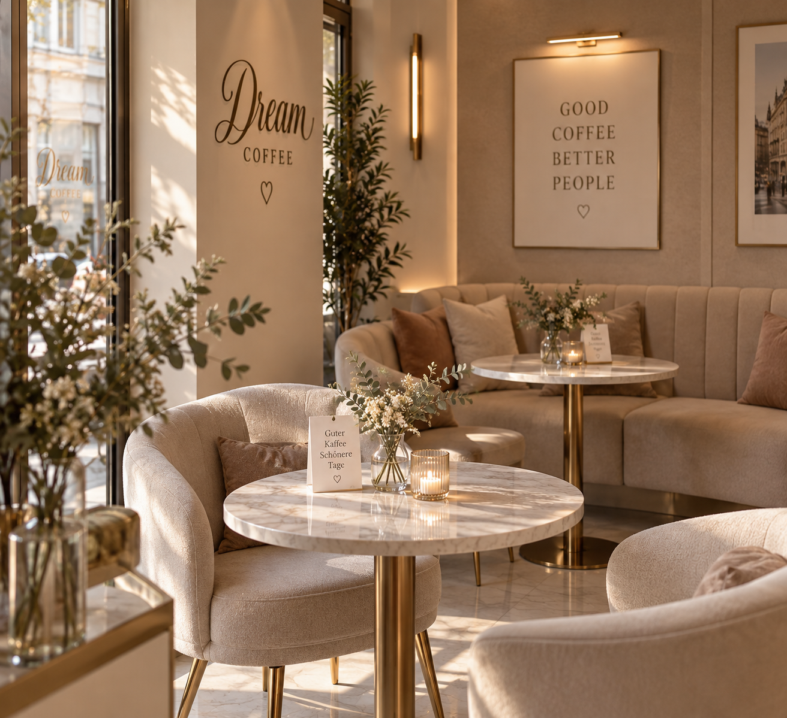
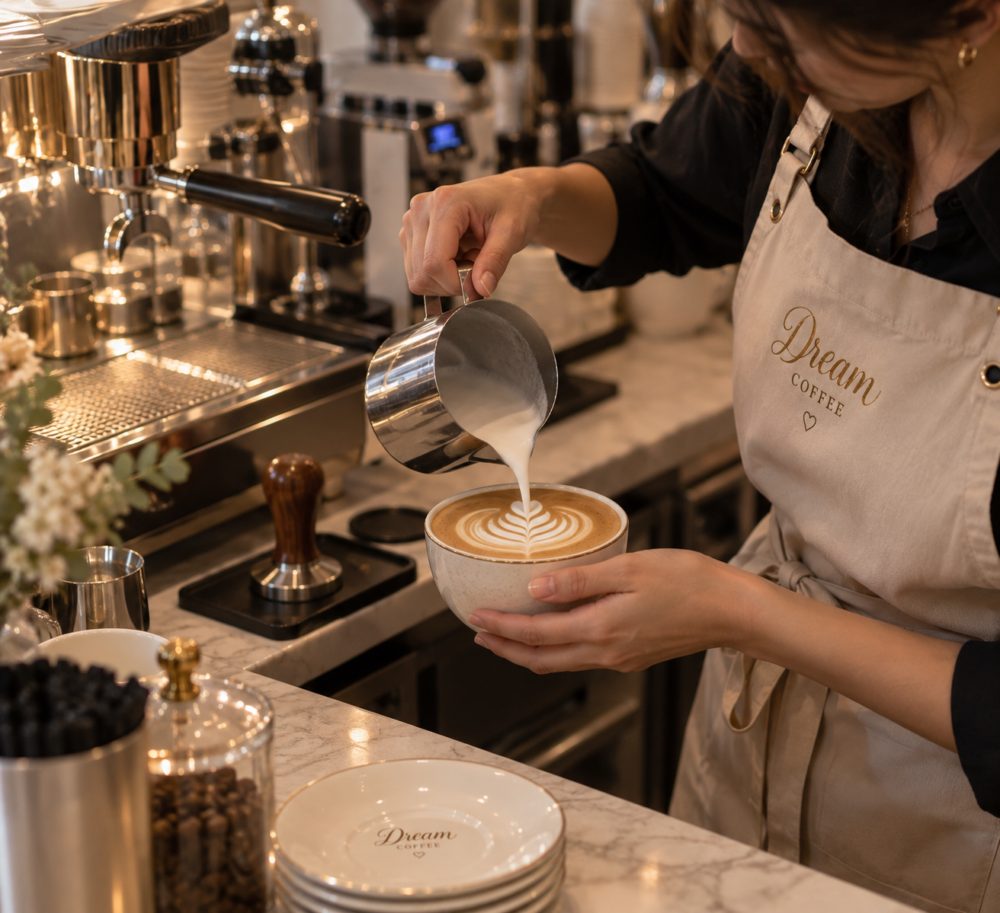
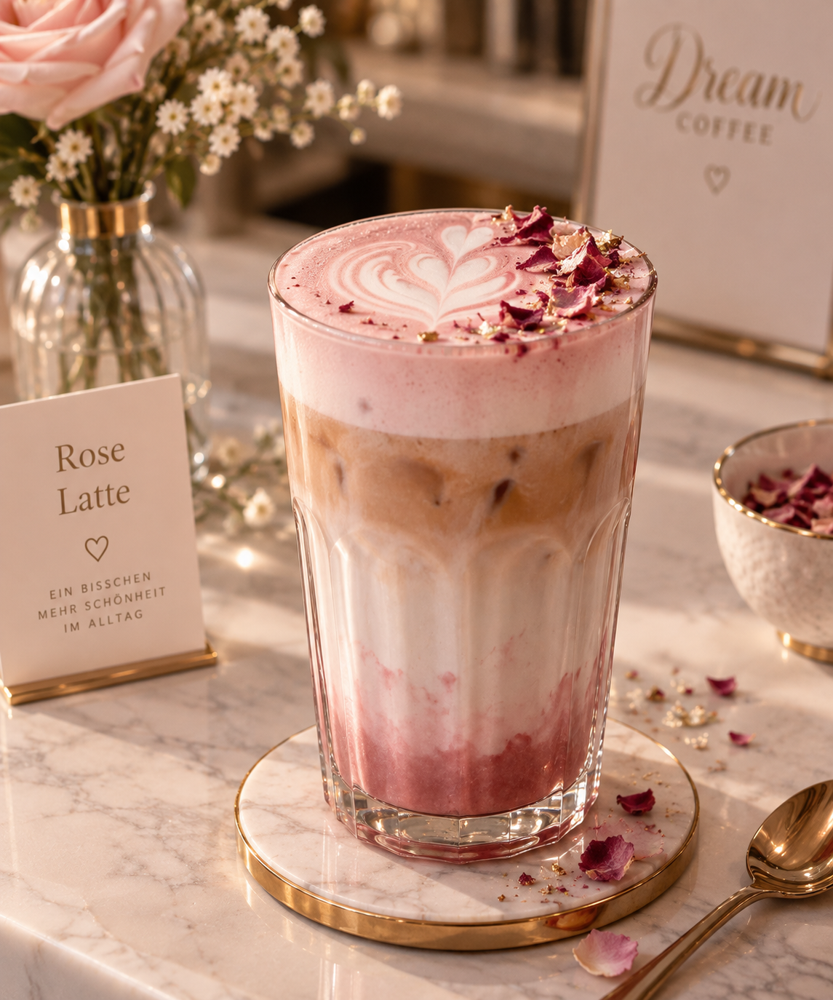
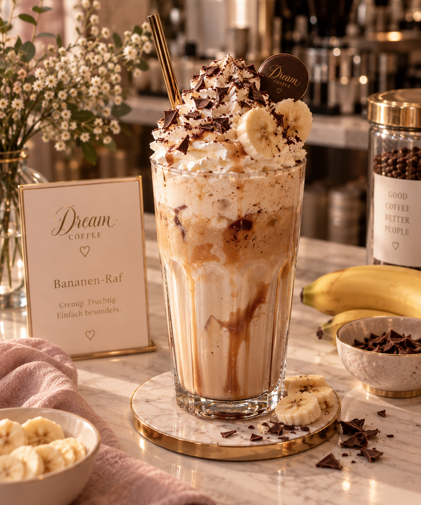
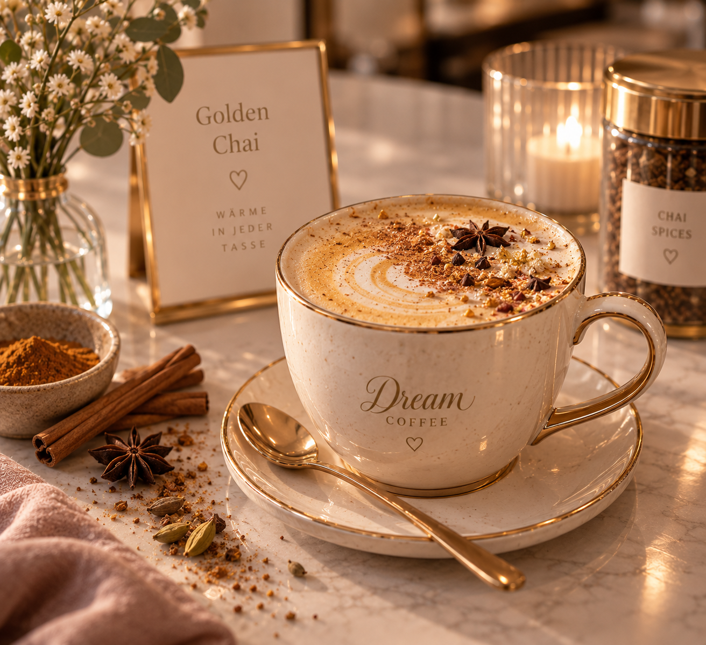
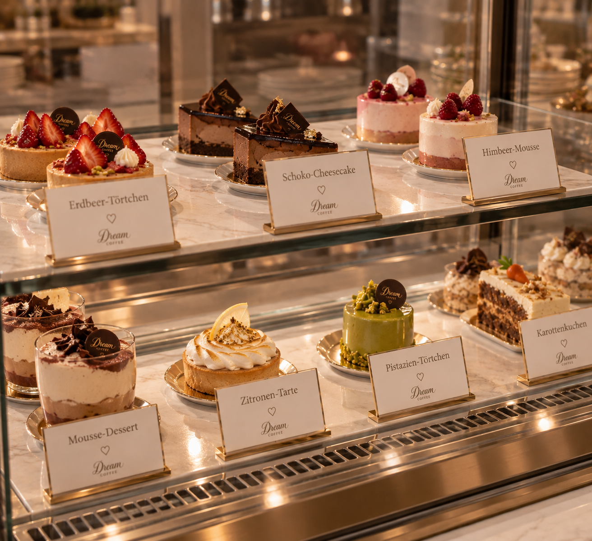
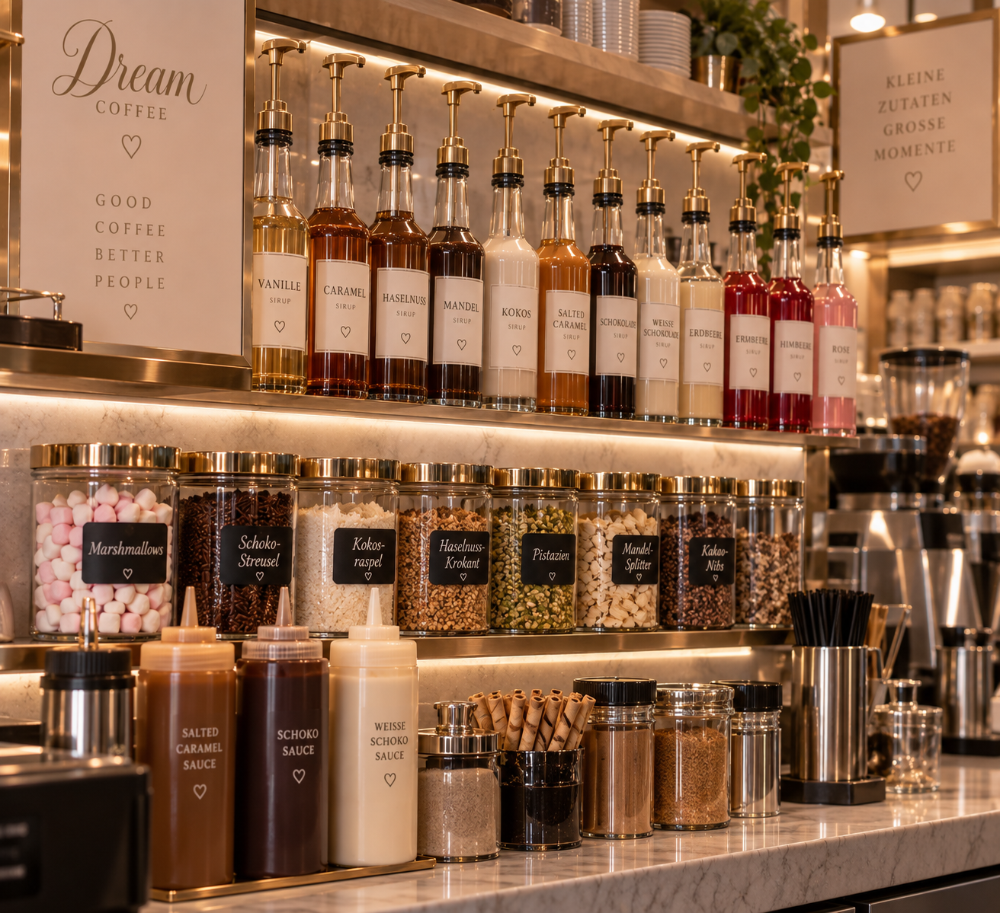
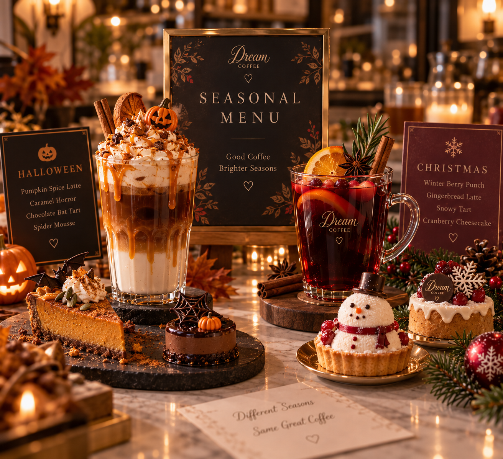

Willkommen bei Dream Coffee
Dream Coffee ist eine stilvolle Kaffeebar mit eigener kleiner Konditorei. Bei uns stehen besondere Getränke im Mittelpunkt: feiner Kaffee, schöne Kreationen mit Milch, Creme und kleinen dekorativen Details.
Dazu gibt es eine kleine Auswahl an süßen Köstlichkeiten wie Desserts, Törtchen und Kuchen. So verbinden wir hochwertige Getränke mit ausgewählten süßen Spezialitäten.
Über uns
Dream Coffee ist eine gemütliche Kaffeebar mit eigener Konditorei. Unser Schwerpunkt liegt auf besonderen Getränken, die nicht nur gut schmecken, sondern auch schön aussehen.
Die Konditorei ergänzt das Angebot mit einer kleinen Auswahl an feinen Desserts, Törtchen und Kuchen. So entsteht eine Mischung aus hochwertigem Kaffee, süßen Spezialitäten und einer liebevollen Präsentation.


Unser Ziel ist ein Ort, an dem man sich eine kleine Auszeit gönnen, schöne Getränke genießen und dazu ein feines Dessert probieren kann.
Speisekarte
Unsere Karte verbindet klassische Kaffeespezialitäten mit besonderen Getränken aus der Dream-Coffee-Konditorei. Dazu gibt es feine Desserts und kleine süße Highlights.




| Art | Name | Beschreibung | Preis |
|---|---|---|---|
| Kaffee | Espresso | Kleiner, kräftiger Kaffee mit intensivem Aroma. | 2,50 € |
| Kaffee | Ristretto | Besonders kurzer und kräftiger Espresso. | 2,70 € |
| Kaffee | Doppio | Doppelte Portion Espresso für einen starken Start. | 3,80 € |
| Kaffee | Americano | Espresso mit heißem Wasser für einen milden Kaffeegeschmack. | 3,20 € |
| Kaffee | Cappuccino | Espresso mit Milch und cremigem Milchschaum. | 3,90 € |
| Kaffee | Latte | Espresso mit viel heißer Milch und mildem Geschmack. | 4,10 € |
| Kaffee | Latte Macchiato | Espresso mit viel Milch und feiner Schaumschicht. | 4,30 € |
| Kaffee | Flat White | Feiner Kaffee mit samtiger Milch und weichem Geschmack. | 4,20 € |
| Spezialgetränk | Bananen-Raf | Cremiges Getränk mit Sahne, Eis, Bananenstücken und Schokostreuseln. | 5,20 € |
| Spezialgetränk | Rose Latte | Latte mit Rosensirup, feinen Schichten im Glas und zarten Blüten-Dekoren. | 4,90 € |
| Spezialgetränk | Golden Chai | Würziger Chai mit Espresso, Milch und warmer goldener Gewürznote. | 5,00 € |
| Spezialgetränk | Iced Caramel Coffee | Kalter Kaffee mit Eiswürfeln, Orangensaft und süßem Karamell. | 5,40 € |
| Spezialgetränk | Oat Cloud Latte | Cremiger Latte mit heißer Schokolade, Hafermilch, Kokossirup, Milchschaum und Kieferkernen. | 5,10 € |
| Dessert | Erdbeer-Törtchen | Kleines Törtchen mit Erdbeeren und heller Creme. | 4,50 € |
| Dessert | Mousse-Törtchen | Leichtes Mousse-Dessert mit feiner Creme und einer besonders zarten Süße. | 4,80 € |
| Dessert | Schoko-Cheesecake | Feiner Schoko-Cheesecake mit cremiger Füllung und knusprigem Boden. | 4,90 € |
| Dessert | Himbeer-Mousse | Zartes Himbeer-Mousse mit fruchtiger Note und cremiger Leichtigkeit. | 4,30 € |
Besonderheiten
Bei Dream Coffee können Gäste ihre Getränke ganz individuell zusammenstellen. Dafür bieten wir verschiedene cremige Toppings, hausgemachte Extras und besondere Zutaten an, die jedes Getränk noch feiner und besonderer machen.


Unsere Auswahl umfasst zum Beispiel hausgemachtes gesalzenes Karamell, echte Schokolade, cremiges Eis, Marshmallows, Schokostreusel, Kokosraspeln, Sahne und feine Zesten als dekorative und geschmackvolle Ergänzung.
- Hausgemachtes gesalzenes Karamell
- Echte Schokolade als cremige Ergänzung
- Verschiedene Sorten hausgemachtes Eis
- Marshmallows in verschiedenen Farben und Größen
- Schokostreusel und Kokosraspeln
- Frische Sahne als besonderes Extra
- Feine Zesten und kleine dekorative Toppings
- Gehackte Nussmischungen und Kieferkerne als Garnitur
Auch bei den Milchsorten gibt es viele Möglichkeiten: Neben klassischer Milch bieten wir Mandelmilch, Sojamilch, Hafermilch, laktosefreie Milch und weitere passende Alternativen an. Außerdem gibt es saisonale Specials, die sich im Laufe des Jahres verändern.
Besondere Leistungen bei Dream Coffee
Für besondere Anlässe bieten wir mehr als nur Café-Besuch: Unsere Gäste können Tische reservieren, Lieferungen bestellen oder individuelle Konditorei-Wünsche direkt mit uns besprechen.
- Tischreservierung für kleine Feiern und besondere Termine
- Lieferung im näheren Umkreis
- Individuelle Torten und süße Sonderbestellungen
- Geburtstagstorten nach Wunsch
- Persönliche Abstimmung mit unserem Konditorei-Team
Bitte folgen Sie unseren Neuigkeiten: Schon bald gibt es ein neues zeitlich begrenztes Menü mit besonderen Getränken und Desserts passend zur aktuellen Jahreszeit.
Öffnungszeiten
Wir freuen uns, Sie an vielen Tagen in unserem Café begrüßen zu dürfen. Kommen Sie vorbei und genießen Sie eine kleine Auszeit bei Dream Coffee.
- Montag: 08:00 – 18:00 Uhr
- Dienstag: 08:00 – 18:00 Uhr
- Mittwoch: 08:00 – 18:00 Uhr
- Donnerstag: 08:00 – 19:00 Uhr
- Freitag: 08:00 – 20:00 Uhr
- Samstag: 09:00 – 20:00 Uhr
- Sonntag: 09:00 – 17:00 Uhr
Kontakt
Sie finden uns ganz leicht im Stadtzentrum. Schreiben Sie uns gerne eine E-Mail oder rufen Sie uns an, wenn Sie einen Tisch reservieren oder etwas fragen möchten.
Adresse: Blumenstraße 12, 69115 Heidelberg
Telefon: +49 6221 123456
E-Mail: info@dreamcoffee.de
Kontakt aufnehmen